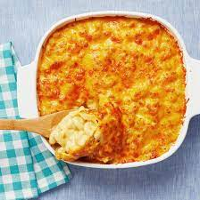

Prep: 15 mins Servings: 3
Cook: 45 mins Yeild: 3 Servings
Total: 1 hour
Preheat the oven to 350 degrees F (175 degrees C). Lightly grease a 2-quart baking dish.
In a large pot of salted water, lightly boil the macaroni for about 5 minutes until half-cooked.
Whisk the egg and milk together in a large cup. Add butter and cheese to the egg and milk. Stir well.
Place the lightly cooked macaroni in the prepared baking dish. Pour the egg and cheese liquid over the macaroni, sprinkle with salt and pepper, and stir well. Press the mixture evenly around the baking dish.
Bake uncovered, for 30 to 40 minutes, or until the top is brown.